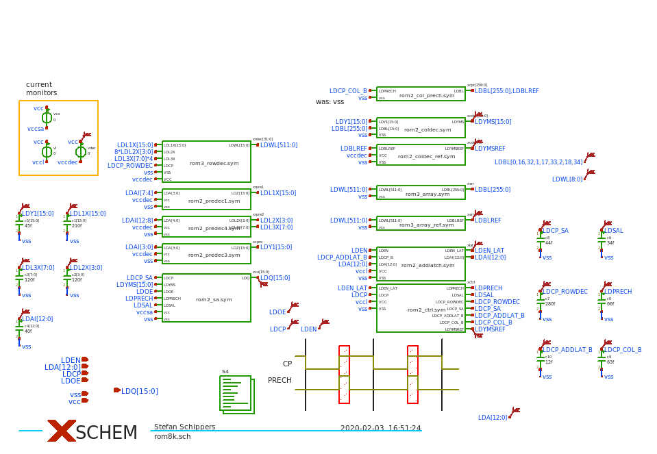
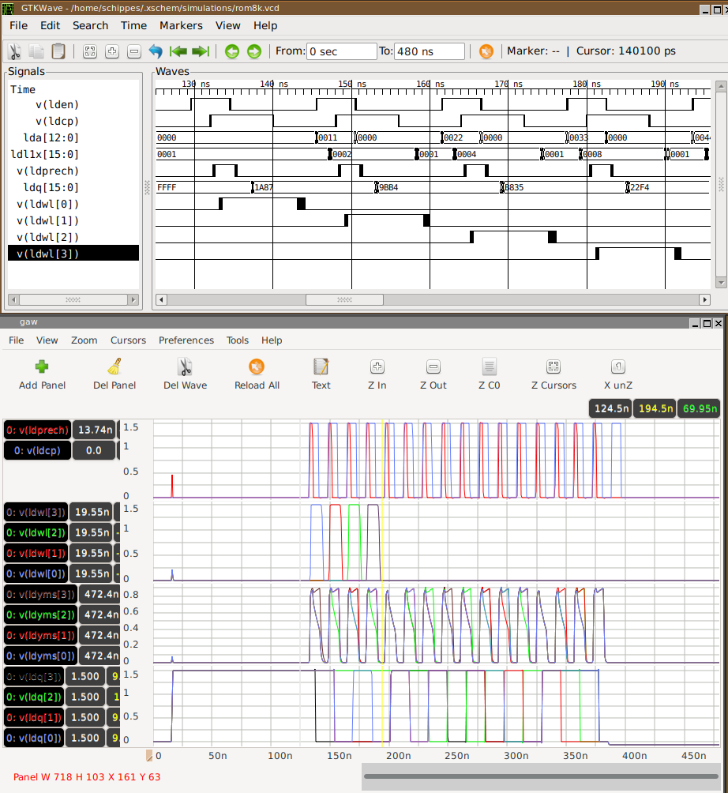

PREV
UP
NEXT
SIMULATION - 3
Example of a complex system simulation with NGSPICE
- 8KW (16KB) Synchronous ROM Macro cell, 16 I/O, 1KB data fully programmed in array.
- 14287 MOS transistors, 16 sense amplifiers, row / column decoders, timing circuits, 5.3ns access time.
- 16 read accesses simulated in 12 minutes with ngspice.
- ldq[15:0] data output matches expected data from ROM array.

